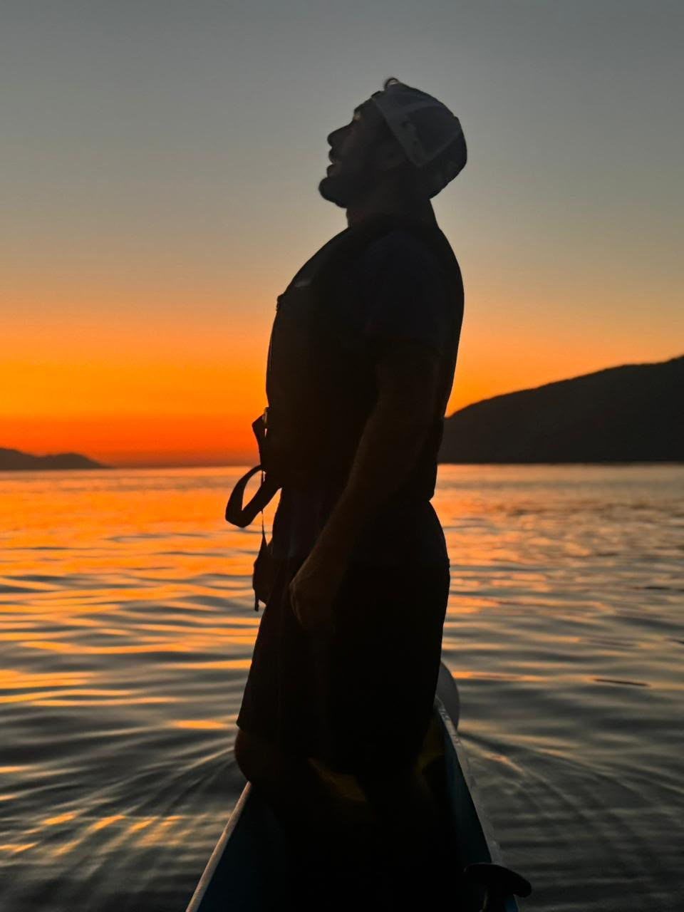
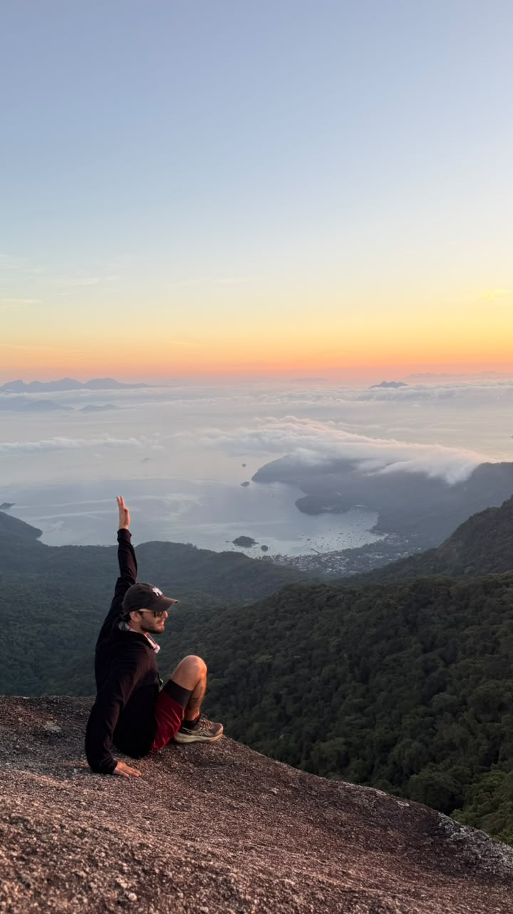
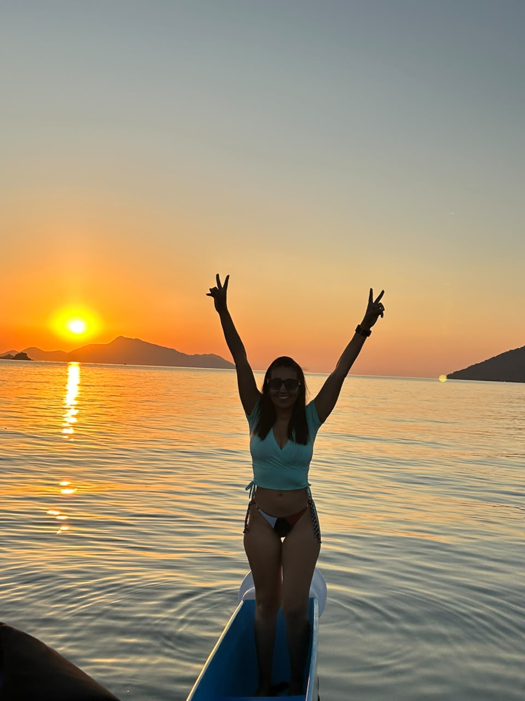
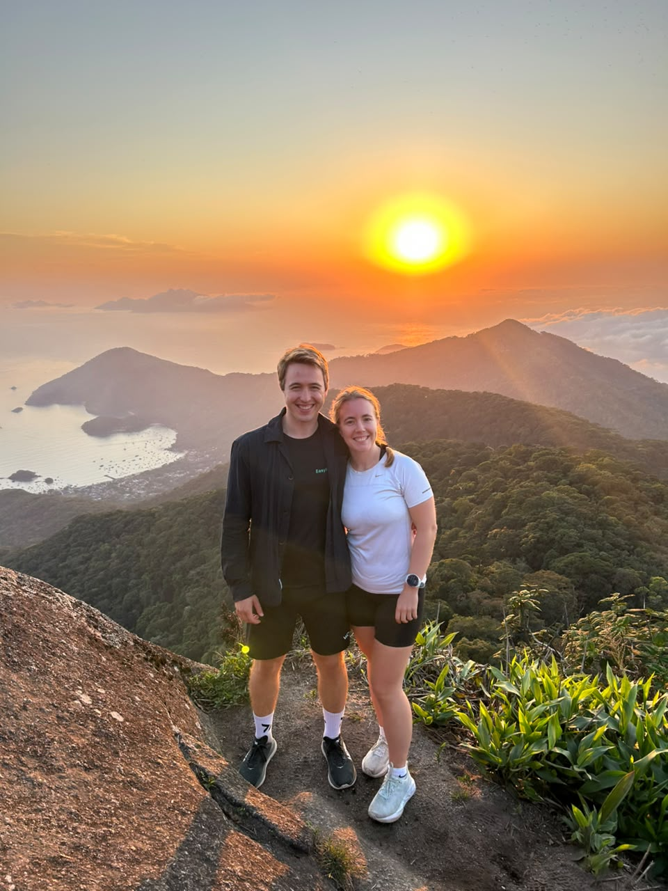
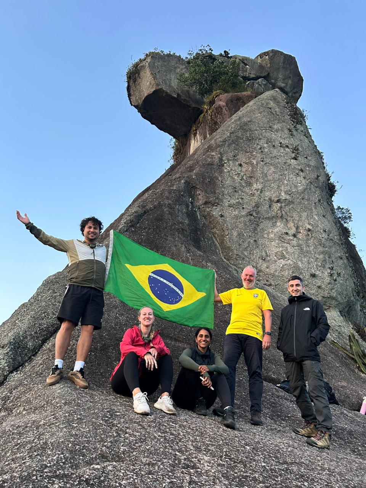
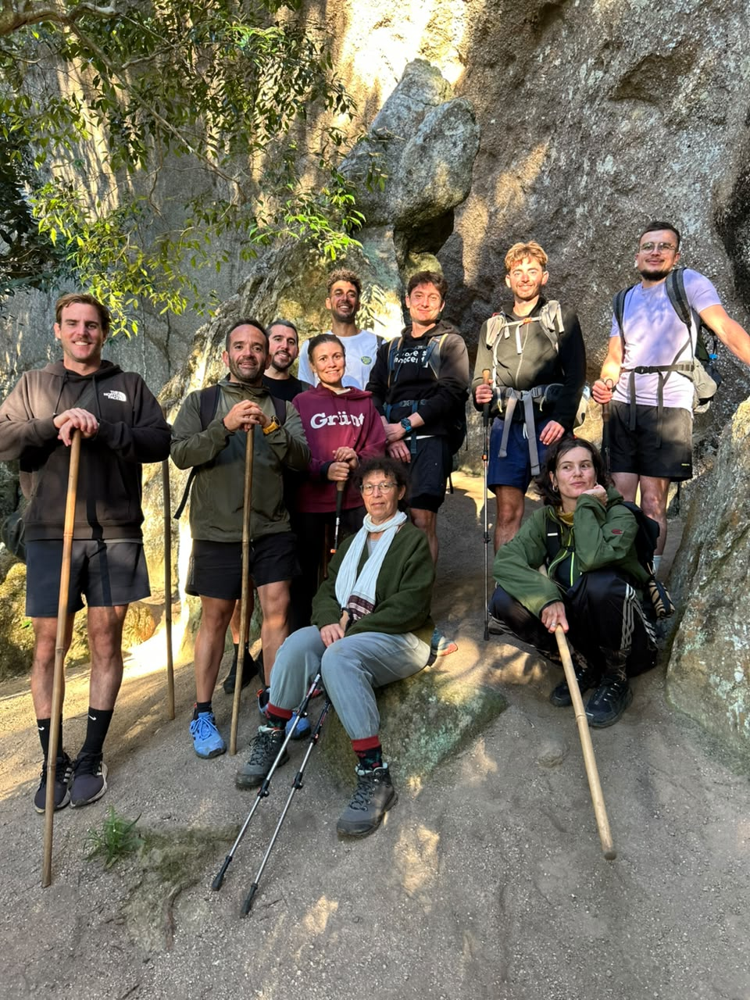
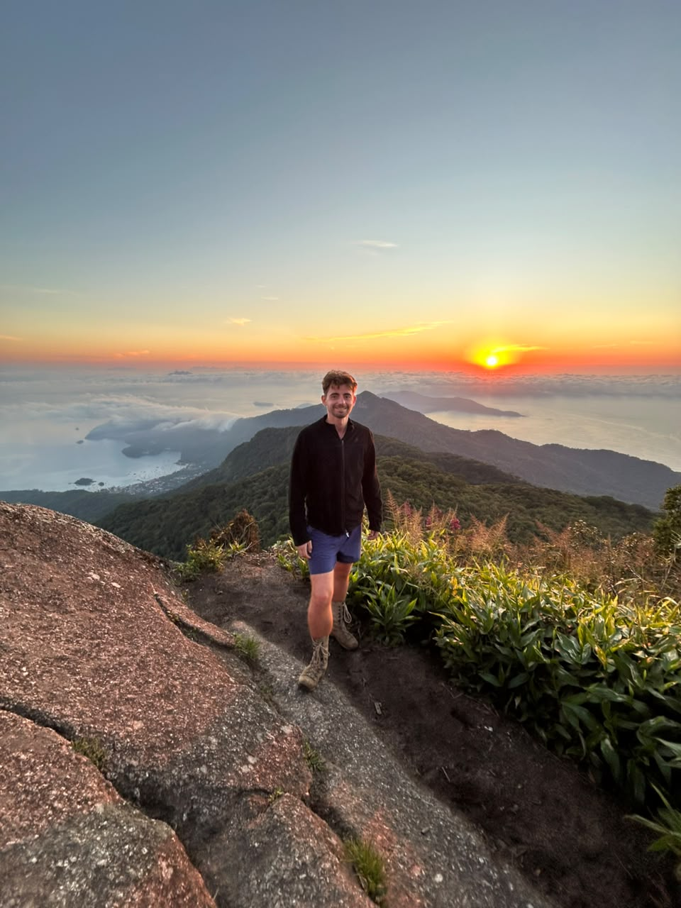
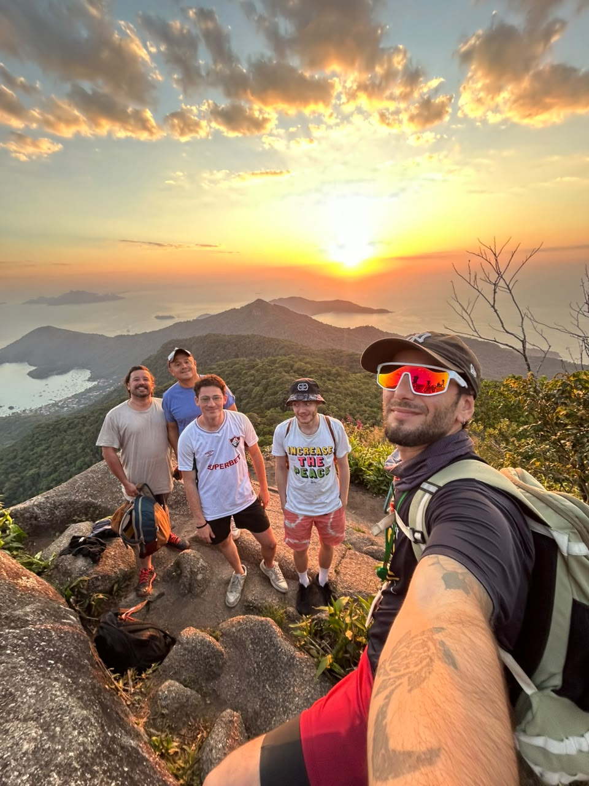
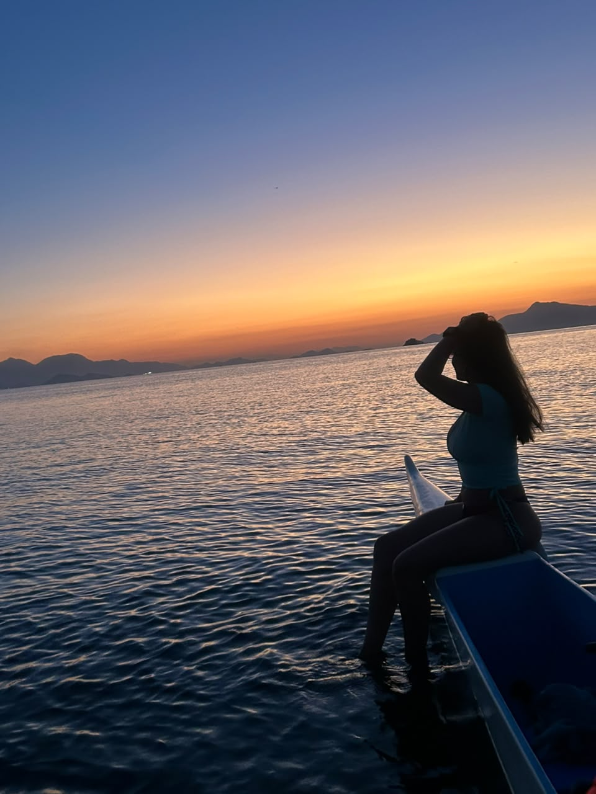

Sunrise paddle
We leave before dawn and paddle to a spot to watch the sun come up. Snorkel over the coral on the way, then follow the coastline home past birds, beaches and forest.
Ask about the sunrise paddleSmall-group Hawaiian canoe and mountain tours in Ilha Grande, Brazil, guided by Franco Raffaeli.

Franco has been paddling and hiking Ilha Grande for years. Every tour runs with one guide and no more than six people, so nobody gets left behind and the island stays quiet.
No experience is needed for any of the tours. You will get a paddling lesson before you go out, all the safety gear, and photos and videos of the trip sent to you afterwards.

On the water
Hawaiian canoe tours: bioluminescence after dark, sunrise and sunset paddles.
Three tours
On the mountain
Guided climbs through the Atlantic Forest to the top of Pico do Papagaio.
One routeThe one people come back for
Tiny marine organisms light up when the water moves. We paddle out after dark, slip into the sea with a mask, and the water lights up around your hands with every stroke.
Bioluminescence is a natural phenomenon, so it depends on the sea and the sky. Darker nights show more light, which is why departure times move with the phase of the moon.
Same canoe, same small group, different light. Both trips leave from Vila do Abraão.

We leave before dawn and paddle to a spot to watch the sun come up. Snorkel over the coral on the way, then follow the coastline home past birds, beaches and forest.
Ask about the sunrise paddleAn easy evening on the water along the coast of Ilha Grande, timed so you are out there when the light turns. A good first paddle if you have never been in a canoe.
Ask about the sunset paddleA guided climb through the Atlantic Forest to one of the best views in the state of Rio de Janeiro. We warm up at the meeting point, then walk up through the forest at a pace that works for the group.
On the way there is wildlife to spot, plants you will not see anywhere else, and lookouts over the whole bay. At the top we stop properly before heading back down.

Everything people usually ask before booking.
A small bottle of water, a windbreaker, swimwear and a towel.
For the sunrise paddle, bring sunscreen as well.
Mámbembe Hostel, Vila do Abraão, Ilha Grande.
Cash, Pix, or card with a small processing fee.
You pay on the day, at the meeting point.
No. None of the tours need previous experience.
Every canoe trip starts with a paddling lesson, and the guide is with the group the whole time.




Reviews and day-to-day photos from the tours.
Send a message and we will find the right day, tide and moon for your trip.
Message us on WhatsApp